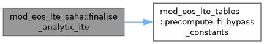
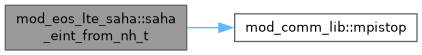
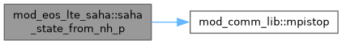
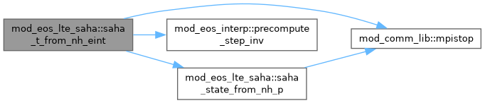

Analytic hydrogen Saha EoS with neutral helium (eos_method == 'analytic'). More...
Functions/Subroutines | |
| subroutine, public | load_analytic_lte () |
| Analytic-method load: no binary tables (on-the-fly Saha solve); just announce the method. | |
| subroutine, public | finalise_analytic_lte () |
| Analytic-method finalise: no table unit conversion needed; build the Gamma1 table only for 'exact' mode, then the shared FI-bypass constants. | |
| double precision function, public | saha_eint_from_nh_t (nh_code, t_code) |
| eint/nH from Saha at (nH, T), in code units | |
| subroutine, public | saha_state_from_nh_p (nh_code, p_code, t_out, y_out, eint_nh_out) |
| Given (nH, p) in code units, T, y and optionally eint/nH: bisection on p = nH*(1+He+y(T))*T, with kB absorbed in the code units. | |
| subroutine, public | saha_t_from_nh_eint (nh_code, eint_nh_code, t_out, y_out) |
| Temperature and ionisation fraction from (nH, eint/nH) in code units, by bisection. | |
Detailed Description
Analytic hydrogen Saha EoS with neutral helium (eos_method == 'analytic').
Ground-state Saha for hydrogen, solved per call without tables: X(T) = saha_pf * T^{3/2} * exp(-chi/kB/T) y(=ne/nH) = 2X / (X + sqrt(X^2 + 4 nH X)) Public entry points take and return code units; the CGS conversion is internal. T(nH, eint/nH) is found by bisection and p(nH, T) closes the state. build_gamma1_analytic_table tabulates Gamma_1(nH, p/nH) once for the 'exact' gamma1 path, on the axes that gamma1_from_nH_p reads for every method
Function/Subroutine Documentation
◆ finalise_analytic_lte()
| subroutine, public mod_eos_lte_saha::finalise_analytic_lte |
Analytic-method finalise: no table unit conversion needed; build the Gamma1 table only for 'exact' mode, then the shared FI-bypass constants.
Definition at line 51 of file mod_eos_lte_saha.t.

◆ load_analytic_lte()
| subroutine, public mod_eos_lte_saha::load_analytic_lte |
Analytic-method load: no binary tables (on-the-fly Saha solve); just announce the method.
Definition at line 41 of file mod_eos_lte_saha.t.
◆ saha_eint_from_nh_t()
| double precision function, public mod_eos_lte_saha::saha_eint_from_nh_t | ( | double precision, intent(in) | nh_code, |
| double precision, intent(in) | t_code ) |
eint/nH from Saha at (nH, T), in code units
Definition at line 89 of file mod_eos_lte_saha.t.

◆ saha_state_from_nh_p()
| subroutine, public mod_eos_lte_saha::saha_state_from_nh_p | ( | double precision, intent(in) | nh_code, |
| double precision, intent(in) | p_code, | ||
| double precision, intent(out) | t_out, | ||
| double precision, intent(out) | y_out, | ||
| double precision, intent(out), optional | eint_nh_out ) |
Given (nH, p) in code units, T, y and optionally eint/nH: bisection on p = nH*(1+He+y(T))*T, with kB absorbed in the code units.
Definition at line 100 of file mod_eos_lte_saha.t.

◆ saha_t_from_nh_eint()
| subroutine, public mod_eos_lte_saha::saha_t_from_nh_eint | ( | double precision, intent(in) | nh_code, |
| double precision, intent(in) | eint_nh_code, | ||
| double precision, intent(out) | t_out, | ||
| double precision, intent(out) | y_out ) |
Temperature and ionisation fraction from (nH, eint/nH) in code units, by bisection.
Definition at line 149 of file mod_eos_lte_saha.t.

Generated by